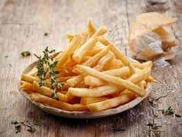

Papas Fritas
Receta para papas fritas caseras

Ingredientes
3 o 4 papas (300 gr)
Aceite
Sal
Elaboracion (Pasos)
Pelar las papas
Cortalas en baston
Calentar aceite en una sarten
Cocinar gasta que esten doradas
Removerlas del aceite y salar a gusto